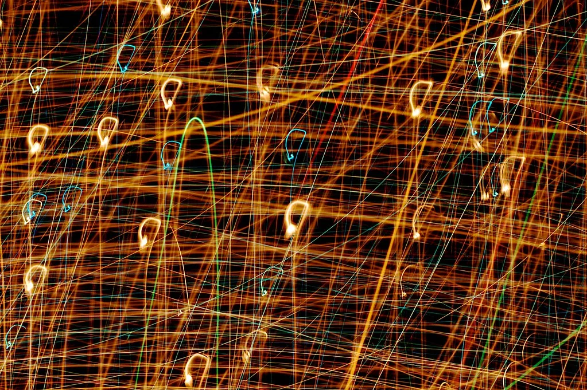
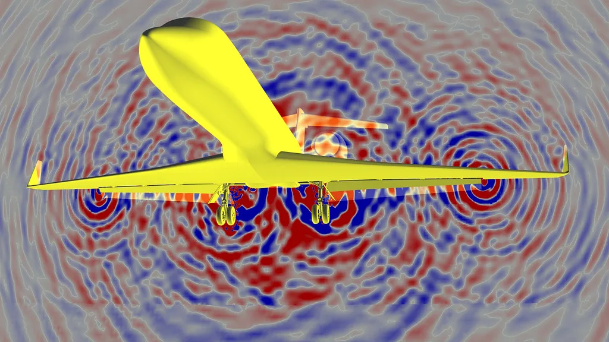
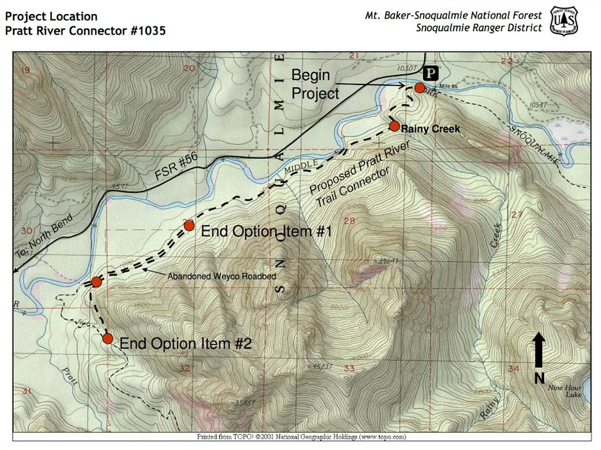
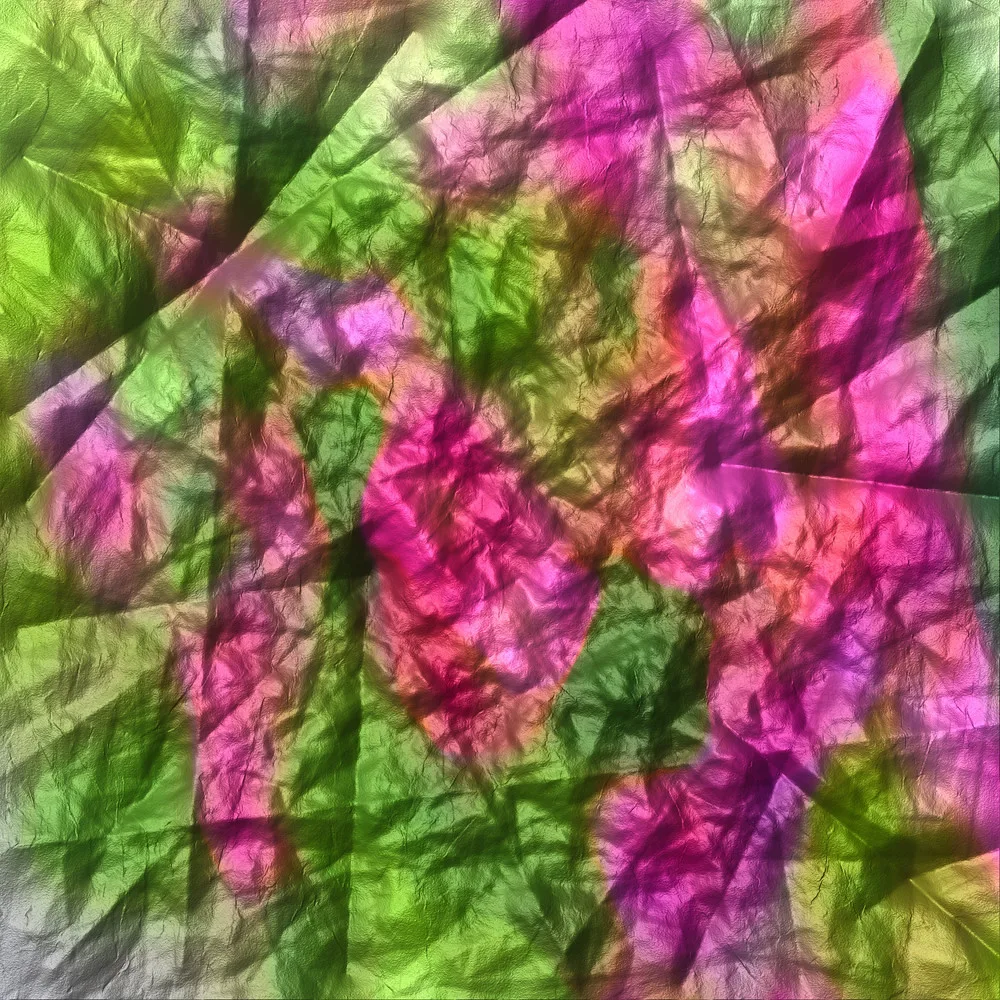

밤에 셰이더를 만지다가 낮 일보다 재미있어져 나왔습니다. 첫 해 의뢰는 세 건이 전부였습니다.
디자이너와 개발자가 합류했습니다. 이때부터 실험을 공개하기 시작했습니다.
미술관과 브랜드 전시에 인터랙션을 납품했습니다. 관람객 앞에서 안 끊기는 게 목표였습니다.
컴퓨트 셰이더로 30만 좌표를 실시간 처리하는 데까지 왔습니다.

흐르는 격자 WebGL · 셰이더 마우스 속도에 따라 격자가 늘어지고 되돌아옵니다.
소리로 그리는 선 Web Audio · Canvas 마이크 입력의 주파수를 선의 굵기로 바꿉니다. 글자가 흩어지는 표지 Canvas 2D 스크롤하면 제목이 입자로 흩어집니다. 색을 고르는 도구 React · OKLCH 밝기를 유지하면서 색만 바꾸는 팔레트 도구.
지도 위 밀도 WebGPU · 컴퓨트 30만 개 좌표를 실시간으로 밀도로 바꿉니다.
종이 질감 생성기 노이즈 · SVG 인쇄물 느낌을 코드로 만듭니다.잘된 것만 적으면 다음에 또 같은 실수를 합니다. 그래서 실패도 같은 무게로 적어 둡니다.
전시, 캠페인, 제품 화면 어디든 좋습니다. 다만 브라우저에서 실제로 돌아가야 한다는 조건은 지킵니다.
예산과 일정, 목표 기기(모바일 포함 여부)를 적어 주시면 가능 여부를 사흘 안에 답합니다.
저사양 기기에서 프레임이 안 나오면 효과를 줄입니다. 예쁜 것보다 끊기지 않는 쪽을 먼저 고릅니다.
소스는 MIT로 공개합니다. 공개가 곤란한 프로젝트는 미리 알려 주세요. 그런 경우 견적이 달라집니다.